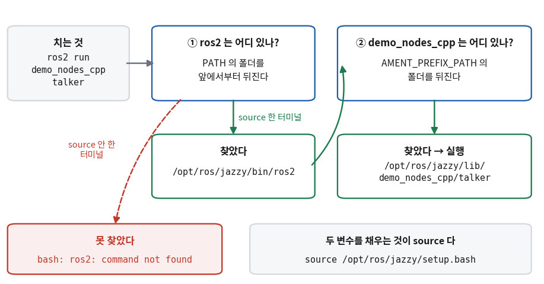
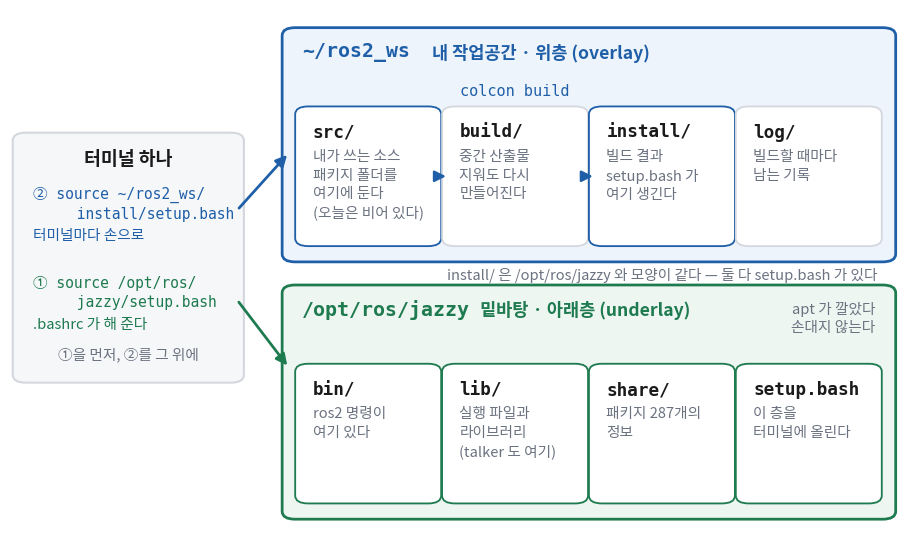

ROS 2 설치와 작업공간
- ROS 2 설치 명령은 일곱 줄인데, 실제로 무엇을 깔고 무엇을 바꾸는 것인가?
- 설치가 끝났는데 새 터미널에서
ros2: command not found가 나오는 것은 왜인가? /opt/ros/jazzy와~/ros2_ws는 왜 따로 있나? 각각 무엇이 들어 있나?- 작업공간 이름을 왜 2부에서 쓰던
~/robot_ws가 아니라~/ros2_ws로 하나? - 설치가 「됐다」는 것은 무엇을 보고 판정하나?
오늘은 노트북에 ROS 2를 깐다. 설치 같은 일은 에이전트에게 맡기면 되는데 굳이 한 회차를 쓸 필요가 있나 하는 생각이 들 수 있다. 실제로 설치 명령 대부분은 🟢다. 에이전트가 치고 여러분은 결과를 보면 된다.
그런데 이 회차에는 맡길 수 없는 것이 두 개 들어 있다.
하나는 source가 하는 일이고, 다른 하나는 작업공간(workspace)이라는 생각이다.
이 둘을 모르면 설치가 멀쩡히 끝났는데도 다음 회차부터 「명령이 없다」, 「패키지를 못 찾는다」는 말을 계속 보게 된다.
그리고 그 원인을 에이전트에게 물어도 에이전트가 띄운 셸에서는 잘 되기 때문에 답이 엇갈리는 경우가 많다.
그래서 오늘 70분은 대체로 이렇게 나뉜다.
- 설치 명령(①②) — 줄마다 무엇을 하는지 읽을 수 있으면 된다. 치는 것은 에이전트에게 맡겨도 된다. 단
sudo가 붙은 줄은 실행 전에 직접 본다. source와 작업공간(③~⑥) — 여기가 이 회차의 알맹이다. 손으로 쳐 보고 전후를 비교한다.- 통신 확인(⑦) — 터미널 두 개에 글자가 오가는 것을 사람이 눈으로 본다.
이 자료의 출력은 전부 우분투 24.04 + ROS 2 Jazzy 컨테이너에서 실제로 쳐서 받은 것이다.
출력에 보이는 /home/ubuntu는 검증한 컴퓨터의 사용자 이름이다. 여러분 화면에는 /home/ros처럼 자기 계정 이름이 보인다.
한 장 요약
무엇을 먼저 볼지: 오른쪽 「확인하는 법」 열이다. 그 칸을 직접 쳐 보지 않았으면 그 줄은 안 끝난 것이다.
| 무엇 | 무엇이 바뀌나 | 확인하는 법 | 누가 |
|---|---|---|---|
| apt 저장소 등록 | apt가 ROS 패키지를 받아 올 주소와 서명 키가 생긴다 | cat /etc/apt/sources.list.d/ros2.list에 noble main이 보이나 | 🟢 |
ros-jazzy-desktop 설치 | /opt/ros/jazzy 아래에 ROS 2 전체가 깔린다 | ls /opt/ros/jazzy에 setup.bash가 있나 | 🟢 |
source 🔴 | 지금 이 터미널의 환경변수(PATH·ROS_DISTRO 등)가 채워진다 | printenv | grep ROS에 ROS_DISTRO=jazzy가 보이나 | 🔴 |
.bashrc에 한 줄 | 새 터미널이 열릴 때마다 위 source가 저절로 된다 | 새 터미널에서 ros2 --help가 뜨나 | 🟢 |
작업공간 ~/ros2_ws 🔴 | 내 패키지를 두고 빌드하는 폴더. src/에 소스, install/에 결과 | colcon build 뒤 ls에 build install log src가 보이나 | 🔴 |
| talker / listener | ROS 2 프로그램 둘이 실제로 글을 주고받는다 | listener 창에 I heard: [Hello World: N]이 올라가나 | 🔴 |
source와 작업공간은 30회까지 매일 쓴다.
「명령이 없다」·「패키지를 못 찾는다」는 말을 들으면 이 표의 셋째·다섯째 줄로 돌아오면 대체로 답이 있다.
① ROS 2 배포판과 우분투 버전 — Jazzy Jalisco · Ubuntu 24.04 🔴 사람이 확인
ROS 2를 깔겠다고 하면 먼저 정해야 하는 것이 있다. 어느 판을 까나? ROS 2는 하나의 프로그램이 아니라 수백 개 패키지의 묶음이다. 이 묶음을 일정 시점에 한 벌로 맞춰 내놓은 것을 배포판(distribution, 줄여서 distro)이라고 한다. 우분투에 24.04·22.04 같은 판이 있는 것과 같은 생각이다.
배포판마다 짝이 되는 우분투 버전이 정해져 있다. ROS 패키지는 우분투의 라이브러리 위에서 빌드되므로, 우분투 판이 다르면 같은 이름의 패키지가 아예 없다. 이 강의에서 쓰는 둘을 표로 놓으면 이렇다.
| 배포판 | 짝이 되는 우분투 | 지원 종료 | 이 강의에서 |
|---|---|---|---|
| Jazzy Jalisco | 24.04 (코드명 noble) | 2029년 5월 | 쓴다 — 남은 지원 기간이 가장 길다 |
| Humble Hawksbill | 22.04 (코드명 jammy) | 2027년 5월 | 쓰지 않는다. 인터넷 자료가 가장 많은 판이라 검색하면 자주 보인다 |
humble이나 iron이 들어 있으면 jazzy로 바꿔 읽는다.
🆕 여기서 처음 나오는 이름
- Jazzy Jalisco
- 2024년 5월에 나온 ROS 2 배포판의 이름이다. ROS 배포판은 「형용사 + 거북 종류」로 이름을 짓는 관례가 있고,
Jalisco(「할리스코」)는 멕시코의 주(州) 이름으로, 그 지방에 사는 진흙거북에서 따왔다. 명령과 경로에는 앞 단어만 소문자로 들어간다 —
jazzy. - 코드명
noble·jammy - 우분투 판마다 붙는 별명이다. 24.04는 Noble Numbat, 22.04는 Jammy Jellyfish. apt 저장소 주소에는 숫자가 아니라 이 코드명이 들어간다. ②절의 저장소 줄 끝에서 다시 본다.
우분투 버전 확인 — /etc/os-release
그래서 설치 명령을 치기 전에 내 우분투가 몇 판인지부터 본다. 우분투를 처음 깔 때 24.04를 골랐을 것이다. 그래도 노트북에 예전에 깔아 둔 22.04가 남아 있는 경우가 꽤 있다.
$ cat /etc/os-release | head -2
PRETTY_NAME="Ubuntu 24.04.4 LTS"
NAME="Ubuntu"
$ . /etc/os-release && echo $VERSION_CODENAME
noble
첫 줄에 24.04, 코드명에 noble이 보이면 맞다.
두 번째 명령 앞의 점(.)은 source를 줄여 쓴 것이다 — ③절에서 이 동작을 제대로 본다.
ros-jazzy-desktop이 없다
22.04에서도 ②절의 저장소 등록까지는 오류 없이 지나간다. 저장소 주소에 jammy가 들어갈 뿐이다.
그리고 마지막 설치 줄에서 멈춘다. 우분투 22.04 컨테이너에서 똑같이 쳐 본 결과다.
$ cat /etc/apt/sources.list.d/ros2.list
deb [arch=amd64 signed-by=/usr/share/keyrings/ros-archive-keyring.gpg] http://packages.ros.org/ros2/ubuntu jammy main
$ sudo apt install ros-jazzy-desktop
Reading package lists... Done
Building dependency tree... Done
Reading state information... Done
E: Unable to locate package ros-jazzy-desktop
Unable to locate package는 「그런 이름의 패키지가 창고에 없다」는 뜻이다.
오타처럼 보이지만 오타가 아니다. jammy 창고에는 Jazzy가 처음부터 없다.
이때 에이전트는 「Humble을 까면 된다」고 권하는 경우가 많은데, 이 강의의 자료와 판이 달라진다.
wsl --install -d Ubuntu-24.04로 24.04를 새로 까는 쪽을 권한다.
② 설치 명령 — apt 저장소 등록과 ros-jazzy-desktop 🟢 맡긴다 ⛔ sudo는 보고 승인
ROS 2는 왜 sudo apt install 한 줄로 안 깔리나?
apt는 우분투가 관리하는 창고에서만 패키지를 찾는다. ROS 2는 그 창고에 없다.
ROS를 만드는 쪽이 따로 운영하는 창고(packages.ros.org)에 있다.
그래서 순서가 이렇게 된다 — 그 창고를 믿어도 된다는 키를 받고, 창고 주소를 apt에 알려 주고, 목록을 새로 받고, 그다음에 깐다.
아래 일곱 줄이 전부다. 이 명령의 원본은 이 강의의 검증용 도커 이미지를 만드는 파일(robotics/docker/Dockerfile)이고,
그 이미지가 실제로 만들어졌다는 것이 이 명령들이 동작한다는 증거다.
도커 안에서는 처음부터 관리자 계정이라 sudo가 없지만, 여러분의 WSL에서는 sudo를 붙여 친다.
아래는 새 우분투 24.04에 일반 계정을 만들어 그 모양 그대로 다시 쳐 본 것이다.
$ sudo apt update
$ sudo apt install -y curl gnupg software-properties-common
$ sudo add-apt-repository -y universe
$ sudo curl -sSL https://raw.githubusercontent.com/ros/rosdistro/master/ros.key -o /usr/share/keyrings/ros-archive-keyring.gpg
$ echo "deb [arch=$(dpkg --print-architecture) signed-by=/usr/share/keyrings/ros-archive-keyring.gpg] http://packages.ros.org/ros2/ubuntu $(. /etc/os-release && echo $UBUNTU_CODENAME) main" | sudo tee /etc/apt/sources.list.d/ros2.list > /dev/null
$ sudo apt update
$ sudo apt install -y ros-jazzy-desktop ros-dev-tools로캘(UTF-8)도 ROS 2 설치 조건 중 하나다. 이것은 우분투를 처음 깔 때 locale-gen·update-locale로 맞춰 두었다.
locale을 쳐서 줄마다 UTF-8이 보이면 다시 할 일은 없다.
줄마다 무엇을 하나
읽는 법: 왼쪽은 위 명령의 줄 번호, 가운데가 그 줄이 시스템에 남기는 것이다. 무엇이 남는지 알면 확인할 수 있다.
| 줄 | 하는 일 | 무엇이 남나 |
|---|---|---|
| 1 | 우분투 창고의 목록을 새로 받는다 | 아무것도 깔리지 않는다. 목록만 새것이 된다 |
| 2 | 뒤에서 쓸 도구 셋을 깐다 — 파일 내려받기(curl), 서명 검사(gnupg), 창고 추가 명령(software-properties-common) | WSL 우분투에는 이미 깔려 있는 경우가 많다. 그러면 「is already the newest version」이라고만 하고 지나간다 |
| 3 | 우분투 창고 중 universe 구역을 켠다. ROS가 기대는 라이브러리 일부가 여기 있다 | 이미 켜져 있으면 그대로 지나간다 |
| 4 | ROS 창고의 서명 키를 받아 시스템 키 보관소에 둔다 | /usr/share/keyrings/ros-archive-keyring.gpg 파일 하나 |
| 5 | ROS 창고 주소 한 줄을 apt 설정 폴더에 적는다 | /etc/apt/sources.list.d/ros2.list 파일 하나 |
| 6 | 목록을 다시 받는다. 이번에는 ROS 창고까지 같이 받는다 | packages.ros.org가 찍힌 줄이 보인다 |
| 7 | ROS 2 전체(ros-jazzy-desktop)와 개발 도구(ros-dev-tools)를 깐다 | /opt/ros/jazzy 폴더와 colcon 명령 |
signed-by=…가 4번에서 받은 키 파일을 가리킨다.
키 없이 주소만 있으면 apt는 그 창고를 믿지 않고 받기를 거부한다.
🆕 5번 줄에서 처음 나오는 것
$(명령)- 괄호 안의 명령을 먼저 실행해서 그 출력으로 그 자리를 바꿔 끼운다(명령 치환).
5번 줄에는 두 개가 있다.
$(dpkg --print-architecture)는amd64로,$(. /etc/os-release && echo $UBUNTU_CODENAME)는noble로 바뀐다. 그래서 이 한 줄을 어느 컴퓨터에 붙여 넣어도 그 컴퓨터에 맞는 주소가 적힌다. | sudo tee 파일tee는 앞에서 넘어온 글을 파일에 쓰는 명령이다.>와 하는 일이 같은데,sudo를 붙일 수 있다는 점이 다르다. 뒤의> /dev/null은tee가 화면에도 같은 글을 찍는 것을 버리는 것이다. 바로 아래 함정 상자가 왜tee를 쓰는지 보여 준다.curl -sSL 주소 -o 파일- 주소의 내용을 받아 파일로 저장한다.
-s는 진행 막대를 감추고,-S는 그래도 오류는 보이고,-L은 주소가 다른 곳으로 넘겨지면 따라간다.
잘 됐는지 — 파일 두 개와 목록 한 줄
4·5번이 남긴 파일 두 개를 직접 본다. 그리고 6번의 출력에서 ROS 창고 줄을 찾는다.
$ ls -l /usr/share/keyrings/ros-archive-keyring.gpg
-rw-r--r-- 1 root root 1167 Oct 17 21:08 /usr/share/keyrings/ros-archive-keyring.gpg
$ cat /etc/apt/sources.list.d/ros2.list
deb [arch=amd64 signed-by=/usr/share/keyrings/ros-archive-keyring.gpg] http://packages.ros.org/ros2/ubuntu noble main
$ sudo apt update
Get:1 http://packages.ros.org/ros2/ubuntu noble InRelease [4,679 B]
Get:3 http://packages.ros.org/ros2/ubuntu noble/main amd64 Packages [2,112 kB]
... (우분투 창고 줄은 줄였다)
Reading package lists...
4 packages can be upgraded. Run 'apt list --upgradable' to see them.
ros2.list에서 볼 것은 둘이다 — $(…) 자리가 amd64와 noble로 바뀌어 있는가.
apt update에서는 packages.ros.org가 찍힌 Get 줄이 있는가, 그리고 Err로 시작하는 줄이 없는가를 본다.
마지막 줄 — 얼마나 받나
7번 줄은 오래 걸린다. 얼마나 받는지 먼저 보려면 --assume-no를 붙인다. 「계속할까요?」에 자동으로 「아니요」라고 답하고 멈춘다.
$ sudo apt install --assume-no ros-jazzy-desktop ros-dev-tools
... (패키지 이름 목록)
1 upgraded, 1450 newly installed, 0 to remove and 3 not upgraded.
Need to get 932 MB of archives.
After this operation, 4,140 MB of additional disk space will be used.
Do you want to continue? [Y/n] N
Abort.sudo를 빼거나, sudo echo … >로 바꾸면 이렇게 막힌다에이전트가 명령을 「정리」하다가 4·5번 줄을 다르게 바꿔 오는 경우가 있다. 둘 다 그럴듯해 보이지만 실제로는 막힌다.
$ curl -sSL https://raw.githubusercontent.com/ros/rosdistro/master/ros.key -o /usr/share/keyrings/x.gpg
curl: (23) Failure writing output to destination
$ sudo echo "deb test" > /etc/apt/sources.list.d/test.list
bash: /etc/apt/sources.list.d/test.list: Permission denied
첫 줄은 sudo가 없어서 /usr/share/keyrings에 쓸 권한이 없다. 받기는 했는데 저장하는 자리에서 실패한 것이다.
둘째 줄이 더 헷갈린다. sudo를 붙였는데도 권한이 없다고 한다.
sudo는 바로 뒤의 명령(echo) 하나에만 붙는다.
>로 파일을 여는 것은 echo가 아니라 지금 내 셸이 하는 일이고, 내 셸은 관리자가 아니다.
그래서 5번 줄은 「쓰는 일」 자체를 tee라는 명령에게 넘기고, 그 tee 앞에 sudo를 붙인다.
🔧 세팅 블록 — 직접 치면 / 시키면 / 확인하는 것
무엇을 먼저 볼지: 맨 오른쪽 열. 에이전트가 「완료했습니다」라고 해도 그 칸은 여러분이 직접 친다.
| 무엇을 하나 | 직접 치면 | 에이전트에게 시키는 문장 🤖 | 내가 확인하는 것 ✅ |
|---|---|---|---|
| 우분투 판 확인 | cat /etc/os-release | head -2 | (시키지 않는다 — 한 줄이다) | 24.04가 보이나 |
| 저장소 등록 (1~6번 줄) | 위 1~6번 줄 | "ROS 2 Jazzy apt 저장소를 등록해 줘. sudo가 붙는 명령은 실행 전에 보여 줘." | ros2.list에 noble main, apt update에 packages.ros.org 줄 |
| 본체 설치 (7번 줄) | sudo apt install -y ros-jazzy-desktop ros-dev-tools | "ros-jazzy-desktop과 ros-dev-tools를 설치해 줘. 먼저 받을 크기를 알려 줘." | ls /opt/ros/jazzy에 setup.bash가 있나 |
.bashrc에 한 줄 (④절) | echo "source /opt/ros/jazzy/setup.bash" >> ~/.bashrc | "~/.bashrc 끝에 source /opt/ros/jazzy/setup.bash 한 줄만 더해 줘. 다른 줄은 넣지 마." | 새 터미널에서 ros2 --help가 뜨나 |
| 빈 작업공간 빌드 (⑤절) | mkdir -p ~/ros2_ws/src → cd ~/ros2_ws → colcon build | "~/ros2_ws에 빈 작업공간을 만들고 한 번 빌드해 줘." | ls ~/ros2_ws에 build install log src |
| 통신 확인 (⑦절) | 터미널 두 개에서 talker / listener | (시키지 않는다 — 이건 내가 본다) | listener 창에 I heard가 올라가나 |
.bashrc에 열 줄 넘게 넣는 예가 많기 때문이다.
오늘은 한 줄만 넣는다. 그래야 뒤에서 무엇이 무엇을 바꿨는지 따라갈 수 있다.
저장소 등록과 설치를 한 번에 맡기려면 이렇게 말한다.
ros-jazzy-desktop과 ros-dev-tools를 깔면 돼. sudo가 붙는 명령은 실행하기 전에 한 줄씩 보여 주고 내가 승인할 때까지 기다려. 설치 전에 받을 크기도 알려 줘. 다 끝나면 「완료」 대신 내가 직접 쳐서 확인할 명령을 알려 줘.sudo 줄은 승인하기 전에 이 세 가지를 본다1) 지우는 줄이 있나 — apt remove, rm, 「0 to remove」가 0이 아닌 apt 출력
2) 주소가 맞나 — packages.ros.org, raw.githubusercontent.com/ros/rosdistro
3) 쓰는 파일이 맞나 — /usr/share/keyrings/…, /etc/apt/sources.list.d/ros2.list세 가지 모두 위 「줄마다 무엇을 하나」 표와 대조하면 된다. 표에 없는 줄이 나오면 그 자리에서 에이전트에게 「이 줄은 무엇을 하나?」라고 묻는다. 시스템 전체를 바꾸는 명령은 되돌리기 어렵다. 승인 한 번에 몇 초만 쓰면 된다.
③ source와 환경변수 — printenv | grep ROS 전후 비교 🔴 사람이 한다
설치가 끝났다. 그러면 ros2 명령을 바로 쓸 수 있을까?
설치 직후 새 터미널을 열어 쳐 보면 이렇게 나온다.
$ ros2 --help
bash: ros2: command not found
$ printenv | grep ROS
$
1 GB 가까이 받아 깔았는데 명령이 없다고 한다. 설치가 실패한 것 같지만 그렇지 않다.
ros2는 /opt/ros/jazzy/bin/ros2에 멀쩡히 있다. 셸이 그 자리를 모를 뿐이다.
둘째 명령은 이름이나 값에 ROS가 들어간 환경변수를 찾는데, 아무것도 안 나왔다.
🆕 위 출력에서 처음 나오는 것
printenv- 지금 이 셸에 있는 환경변수 전부를
이름=값꼴로 한 줄씩 찍는다. 수십 줄이 나오므로 파이프로grep에 넘겨 필요한 줄만 고른다.grep ROS는 대문자ROS가 든 줄만 남긴다. PATH- 명령 이름을 쳤을 때 셸이 그 프로그램을 찾으러 가는 폴더 목록이 담긴 환경변수다. 폴더를
:로 이어 붙여 둔다. 셸은 앞에서부터 차례로 뒤져서 처음 찾은 것을 실행하고, 끝까지 없으면command not found를 낸다.
개념 — source는 지금 이 셸이 파일을 직접 읽는 것이다
리눅스 명령을 배울 때 setenv.sh라는 한 줄짜리 파일을 만들어 같은 파일을 두 가지로 실행해 봤다.
bash setenv.sh로 실행하면 새 셸이 떠서 값을 정하고 끝나면서 값도 사라졌고,
source setenv.sh로 실행하면 지금 이 셸이 파일을 직접 읽어 값이 남았다.
값은 부모에서 자식으로, 아래로만 흐르기 때문이다.
ROS 2가 깔아 준 /opt/ros/jazzy/setup.bash는 그 setenv.sh의 큰 판이다.
안에 「이 변수에 이 폴더를 더하라」는 export 줄이 여럿 들어 있다. 그래서 반드시 source로 읽어야 하고,
bash setup.bash로 실행하면 아무 일도 안 일어난 것처럼 보인다.
$ source /opt/ros/jazzy/setup.bash
$ printenv | grep ROS
ROS_VERSION=2
ROS_PYTHON_VERSION=3
ROS_AUTOMATIC_DISCOVERY_RANGE=SUBNET
ROS_DISTRO=jazzy
$ which ros2
/opt/ros/jazzy/bin/ros2
같은 터미널에서 source 한 줄을 친 뒤다. 아무것도 없던 자리에 네 줄이 생겼다.
볼 것은 마지막 줄 ROS_DISTRO=jazzy다 — 지금 이 터미널이 Jazzy를 쓰고 있다는 표시다.
그리고 which ros2가 이제 경로 한 줄을 찍는다.
🆕 여기서 처음 나오는 것
which 명령이름- 그 명령을 치면 실제로 어느 파일이 실행되는지 경로를 찍는다.
PATH를 셸과 같은 순서로 뒤진다. 아무것도 안 찍히면 셸도 못 찾는다는 뜻이다. ROS_DISTRO·ROS_VERSIONsetup.bash가 만드는 변수다. 지금 터미널에 올라온 배포판 이름과 ROS 판(1 또는 2)이다. 여러 배포판이 깔린 컴퓨터에서 「지금 어느 쪽이 켜져 있나」를 볼 때 쓴다.
무엇이 바뀌었나 — PATH와 AMENT_PREFIX_PATH
grep ROS로는 대문자 ROS가 든 줄만 보였다. 실제로는 더 많은 변수가 바뀌었다.
그중 ros2 run이 쓰는 두 개를 전후로 놓는다.
$ echo $PATH # source 전
/usr/local/sbin:/usr/local/bin:/usr/sbin:/usr/bin:/sbin:/bin
$ source /opt/ros/jazzy/setup.bash
$ echo $PATH # source 뒤
/opt/ros/jazzy/bin:/usr/local/sbin:/usr/local/bin:/usr/sbin:/usr/bin:/sbin:/bin
$ echo $AMENT_PREFIX_PATH
/opt/ros/jazzyPATH의 맨 앞에 /opt/ros/jazzy/bin이 붙었다. 그래서 셸이 ros2를 찾는다.
AMENT_PREFIX_PATH는 source 전에는 아예 없던 변수다. ROS 패키지가 깔린 폴더 목록이고, 지금은 하나뿐이다.
이 목록은 ⑤절에서 작업공간을 올릴 때 한 칸 늘어날 수 있는 자리다.
🆕 여기서 처음 나오는 이름
AMENT_PREFIX_PATHros2명령이 패키지를 찾으러 가는 폴더 목록이다.PATH가 명령을 찾는 목록이라면 이것은 패키지를 찾는 목록이다. ament(「에이먼트」)는 ROS 2의 빌드 도구 묶음 이름이다. 사람 이름이나 약자가 아니라 식물 용어로, ROS 1의 빌드 도구 이름 catkin과 같은 뜻(버드나무의 꼬리 모양 꽃차례)이다. 패키지를 직접 만드는 19회에서ament_cmake로 다시 만난다.
이제 ros2 run demo_nodes_cpp talker(⑦절에서 칠 명령) 한 줄이 어떤 순서로 실행 파일을 찾아가는지 그릴 수 있다.
상황은 이렇다 — 같은 명령을 source 한 터미널과 안 한 터미널에서 쳤다.
아래 그림에서 볼 것은 어디서 갈라지는가다.

command not found로 끝나고,
②까지 가지도 못한다. 아래 오른쪽 상자 — ①과 ②가 뒤지는 두 변수를 채우는 것이 source다.
터미널 A에서 source를 하고 터미널 B를 새로 열면, B에는 아무것도 없다. 값은 아래로만 흐르고 옆으로는 가지 않는다.
⑦절에서 터미널을 두 개 쓰는데, 두 번째 터미널에서 ros2: command not found가 나오는 것이 가장 흔한 첫 실패다.
에이전트에게 물어보면 에이전트는 자기가 띄운 셸에서 source를 하고 「이제 됩니다」라고 답하는 경우가 많다.
그 셸에서는 맞는 말이다. 여러분 터미널에서는 여전히 안 된다. 판정은 언제나 여러분이 연 터미널에서 한다.
④ .bashrc에 source 한 줄 🟢 맡긴다
그러면 터미널을 열 때마다 source /opt/ros/jazzy/setup.bash를 쳐야 하나?
그 반복을 없애는 자리가 ~/.bashrc다. 홈 폴더에 있는 글자 파일이고, 새 터미널이 열릴 때 셸이 이 파일을 스스로 source한다.
여기에 한 줄을 더해 두면 새 터미널마다 저절로 Jazzy가 올라온다.
$ echo "source /opt/ros/jazzy/setup.bash" >> ~/.bashrc
$ tail -1 ~/.bashrc
source /opt/ros/jazzy/setup.bash
>>는 파일 끝에 덧붙인다. > 하나로 치면 원래 있던 .bashrc가 통째로 지워지고 이 한 줄만 남는다.
설정 파일에 줄을 더할 때는 언제나 >>다. tail -1로 마지막 줄을 찍어 정말 들어갔는지 본다.
그리고 판정은 새 터미널에서 한다. 지금 열린 터미널은 .bashrc를 이미 읽고 시작했으므로 이 줄의 영향을 받지 않는다.
창을 하나 새로 열어서 친다.
$ printenv | grep ROS_DISTRO # 새로 연 터미널
ROS_DISTRO=jazzy
$ ros2 pkg prefix demo_nodes_cpp
/opt/ros/jazzyROS_DISTRO=jazzy가 있다. .bashrc가 제 일을 한 것이다.
두 번째 줄은 「demo_nodes_cpp 패키지가 어느 폴더에서 왔나」를 묻는 명령인데, 답이 /opt/ros/jazzy다.
지금 이 컴퓨터의 ROS 패키지는 전부 그 한 곳에서 온다 — 다음 절의 출발점이다.
🆕 여기서 처음 나오는 것
ros2 pkg prefix 패키지이름- 그 패키지가 깔린 폴더(접두 경로)를 찍는다.
AMENT_PREFIX_PATH의 목록 중 어디서 찾았는지를 보여 준다.ros2의 하위 명령은 18회에서 제대로 다룬다. 오늘은 이것 하나만 쓴다. tail -1 파일- 파일의 마지막 한 줄만 찍는다. 숫자를 바꾸면 그만큼의 줄을 찍는다.
에이전트에게 맡길 때는 「한 줄만」과 「확인은 새 터미널에서」를 같이 적는다.
~/.bashrc 끝에 source /opt/ros/jazzy/setup.bash 한 줄만 >>로 더해 줘. 다른 줄은 넣지 말고, 이미 같은 줄이 있으면 더하지 마. 끝나면 tail -3 ~/.bashrc 결과를 보여 주고, 내가 새 터미널을 열어서 칠 확인 명령을 알려 줘.왜 한 줄만 넣나
인터넷의 ROS 설치 글에는 .bashrc에 열 줄 넘게 넣는 예가 흔하다. 작년 이 과목 자료도 그랬다 —
작업공간까지 자동으로 올리는 줄, 로그 모양을 바꾸는 줄, 통신 번호를 정하는 줄, 별칭 몇 개.
편하기는 하다. 대신 무엇이 언제 바뀌었는지가 안 보인다.
그래서 이 강의에서는 배포판을 올리는 한 줄만 넣는다.
⑤절의 작업공간(~/ros2_ws/install/setup.bash)은 .bashrc에 넣지 않고 필요한 터미널에서 손으로 source한다.
작업공간에 내 패키지가 생기는 19회에서, 이 손 한 번이 「왜 내 노드를 못 찾지?」의 답이 되는 장면을 보게 된다.
⑤ 작업공간(workspace) — underlay와 overlay, src·build·install·log 🔴 사람이 한다
ROS 2는 이미 /opt/ros/jazzy에 다 깔렸다. 그러면 내가 만들 프로그램도 거기에 넣으면 되지 않을까?
그렇게 하지 않는 데는 이유가 있다. /opt/ros/jazzy는 apt가 관리하는 자리라 관리자 권한이 있어야 쓸 수 있고,
다음에 apt upgrade로 ROS를 올리면 apt가 그 폴더를 자기 것으로 덮어쓴다. 내가 넣은 파일이 섞여 있으면 어느 쪽이 사라질지 알 수 없다.
개념 — 밑바탕(underlay)과 내 작업공간(overlay)
그래서 ROS 2는 폴더를 층으로 나눠 쓴다. 각각이 무엇인지부터 세운다.
- 밑바탕(underlay) —
/opt/ros/jazzy. apt가 깐 ROS 2 전체다. 이 컴퓨터에서는 패키지 287개가 들어 있다. 여러분은 읽기만 하고 손대지 않는다. 터미널에 올리는 방법은source /opt/ros/jazzy/setup.bash다. - 작업공간(workspace) — 내가 만든 패키지를 두고 빌드하는 폴더다. 홈 폴더 아래 아무 데나 만들 수 있고, 이 강의에서는
~/ros2_ws로 한다. 빌드하면 그 안에install/setup.bash가 생기고, 그것을source하면 내 패키지가 터미널에 올라온다.
둘을 같이 쓸 때는 순서가 있다. 밑바탕을 먼저 올리고, 그 위에 작업공간을 얹는다.
이렇게 위에 얹힌 작업공간을 overlay(덮어 얹은 층)라고 부른다.
터미널은 두 층의 패키지를 모두 보게 되고, 내 패키지는 ROS가 깔아 준 패키지(rclcpp 같은 것)를 아래층에서 가져다 쓴다.
작업공간 안의 폴더 넷
읽는 법: 사람이 손대는 것은 첫 줄 하나다. 나머지 셋은 colcon build가 만든다.
| 폴더 | 누가 만드나 | 무엇이 들어 있나 | 지워도 되나 |
|---|---|---|---|
src/ | 사람 (mkdir) | 내 패키지의 소스. 패키지 하나가 폴더 하나다 | 안 된다 — 내 코드다 |
build/ | colcon build | 컴파일 중간 산출물. 2부에서 cmake -B build로 만들던 그 build와 같은 것이 패키지마다 하나씩 | 된다. 다시 빌드하면 생긴다 |
install/ | colcon build | 빌드 결과(실행 파일 등)와 setup.bash | 된다. 다시 빌드하면 생긴다 |
log/ | colcon build | 빌드할 때마다 남는 기록. 빌드가 실패했을 때 자세한 내용이 여기 있다 | 된다 |
install/은 /opt/ros/jazzy와 모양이 같다. 둘 다 안에 setup.bash가 있고, 그것을 source하면 그 층이 터미널에 올라온다.
그래서 「밑바탕도 사실 누군가의 작업공간을 빌드한 install/이다」라고 이해해도 크게 틀리지 않는다.
망가졌을 때 build install log 셋을 지우고 다시 빌드하는 것이 흔한 처방이 되는 것도 그래서다 — src/만 있으면 나머지는 다시 만들어진다.

.bashrc가 해 준다)이 아래층을, ②(파랑, 터미널마다 손으로)가 위층을 올린다.
위층 안에서는 src/ → build/ → install/로 가는 화살표가 colcon build다.
두 층 사이의 글 한 줄 — install/과 /opt/ros/jazzy는 모양이 같다.빈 작업공간을 빌드한다 — colcon build
오늘은 src/에 아무것도 넣지 않는다. 빈 작업공간을 한 번 빌드해서 폴더 셋이 생기는 것과 overlay를 얹는 것만 본다.
패키지는 19회에서 이 src/ 안에 만든다.
$ mkdir -p ~/ros2_ws/src
$ cd ~/ros2_ws
$ ls
src
$ colcon build
Summary: 0 packages finished [0.08s]
$ ls
build install log src
「0 packages finished」가 정답이다. src/가 비어 있으니 빌드할 패키지가 0개다.
오류가 아니라 「할 일이 없어서 바로 끝났다」는 뜻이다. 그리고 ls에 폴더 셋이 새로 생겼다.
🆕 여기서 처음 나오는 것
colcon build- colcon(「콜콘」, collective construction을 줄인 이름)은 ROS 2의 빌드 명령이다.
지금 있는 폴더 아래를 전부 뒤져서 패키지를 찾고, 패키지마다 CMake를 돌려
build/·install/에 결과를 모은다. 2부에서 프로젝트 하나에cmake를 치던 것을 패키지 여럿에 한 번에 해 주는 도구라고 보면 된다. ②절의ros-dev-tools가 깔아 준다. 「전부 뒤진다」는 성질은 ⑥절에서 다시 중요해진다. mkdir -p 경로-p는 중간 폴더가 없으면 같이 만든다.~/ros2_ws가 없어도~/ros2_ws/src까지 한 번에 생긴다.
install/setup.bash를 source 하면 — overlay를 얹는다
빌드로 생긴 install/ 안을 보고, 그 setup.bash를 올리기 전과 뒤를 비교한다.
$ ls install
COLCON_IGNORE local_setup.sh local_setup.zsh setup.sh
local_setup.bash _local_setup_util_ps1.py setup.bash setup.zsh
local_setup.ps1 _local_setup_util_sh.py setup.ps1
$ echo "[$COLCON_PREFIX_PATH]" # overlay를 얹기 전
[]
$ source install/setup.bash
$ echo "[$COLCON_PREFIX_PATH]" # 얹은 뒤
[/home/ubuntu/ros2_ws/install]COLCON_PREFIX_PATH에 내 작업공간의 install 폴더가 들어왔다 — 위층이 얹혔다는 표시다.
.sh·.zsh·.ps1은 다른 셸용이다. 우리가 쓰는 셸은 bash이므로 setup.bash만 쓴다.
지금은 패키지가 0개라 이 층에서 새로 보이는 것은 없다. 19회에 패키지를 넣고 빌드하면 여기서 AMENT_PREFIX_PATH도 한 칸 늘어난다.
이 setup.bash는 아래층을 기억하고 있다. 빌드할 때 터미널에 올라 있던 밑바탕의 경로가 파일 안에 적힌다.
$ grep -n "opt/ros" install/setup.bash
22:COLCON_CURRENT_PREFIX="/opt/ros/jazzy"
그래서 install/setup.bash 하나를 source 하면 아래층 → 위층 순서로 둘 다 올라온다.
거꾸로 말하면, 밑바탕을 source 하지 않은 터미널에서 colcon build를 하면 위층이 기댈 아래층이 기록되지 않는다.
이 강의에서는 .bashrc가 언제나 밑바탕을 먼저 올려 두므로 그 일이 생기지 않는다.
① 빌드하기 전에 source 부터 하면 — install/은 빌드가 만드는 폴더라 아직 없다.
$ cd ~/ros2_ws
$ source install/setup.bash
bash: install/setup.bash: No such file or directory
② src/ 안에서 colcon build를 치면 — 오류 없이 끝난다. 그래서 더 알아채기 어렵다.
$ cd ~/ros2_ws/src
$ colcon build
Summary: 0 packages finished [0.07s]
$ ls
build install log
colcon build는 명령을 친 그 폴더를 작업공간으로 본다. 그래서 build install log가 src/ 안에 생겼다.
이 상태에서 ~/ros2_ws/install/setup.bash를 source 해도 새로 빌드한 것은 거기 없다.
colcon build는 언제나 작업공간의 맨 위(~/ros2_ws)에서 친다.
잘못 생긴 세 폴더는 src/ 안에서 rm -rf build install log로 지운다 — 지우기 전에 pwd로 지금 자리를 한 번 본다.
⑥ 작업공간 이름 ~/ros2_ws — colcon은 폴더 아래를 전부 뒤진다 🔴 사람이 판단
2부 C++ 실습은 전부 ~/robot_ws 아래에서 했다. ~/robot_ws/l06, ~/robot_ws/l09/range_filter 같은 식이다.
이름도 로봇 작업공간이니 거기에 src/를 만들어 ROS 작업공간으로 같이 쓰면 될 것 같다.
실제로 작년 이 과목 자료도 작업공간을 ~/robot_ws로 했다.
그런데 ⑤절에서 본 colcon의 성질이 여기서 걸린다. colcon은 명령을 친 폴더 아래를 전부 뒤져서, CMakeLists.txt가 있는 폴더를 전부 패키지로 잡는다.
2부의 실습 폴더가 남아 있는 ~/robot_ws에서 그대로 쳐 보면 이렇다.
$ cd ~/robot_ws
$ ls
l06 l08 l09
$ colcon list
hello l06 (cmake)
range_filter l09/range_filter (cmake)
scan_tools l08/scan_tools (cmake)
$ colcon build
Starting >>> hello
Starting >>> range_filter
Starting >>> scan_tools
[0.449s] WARNING:colcon.colcon_cmake.task.cmake.build:Could not run installation step for package 'hello' because it has no 'install' target
Finished <<< hello [0.31s]
[0.724s] WARNING:colcon.colcon_cmake.task.cmake.build:Could not run installation step for package 'range_filter' because it has no 'install' target
Finished <<< range_filter [0.58s]
[0.811s] WARNING:colcon.colcon_cmake.task.cmake.build:Could not run installation step for package 'scan_tools' because it has no 'install' target
Finished <<< scan_tools [0.66s]
Summary: 3 packages finished [0.74s]
$ ls
build install l06 l08 l09 log
colcon list는 「빌드한다면 무엇을 패키지로 보나」만 찍고 아무것도 빌드하지 않는 명령이다. 줄마다 패키지 이름 · 폴더 · 종류다.
6회의 hello, 8회의 scan_tools, 9회의 range_filter가 ROS 패키지도 아닌데 패키지로 잡혔다.
CMakeLists.txt의 project(hello CXX)에서 이름을 읽어 온 것이다.
WARNING 줄은 「이 프로젝트에는 install(…) 규칙이 없어서 install/로 옮길 것이 없다」는 뜻이다 —
2부의 CMake 프로젝트는 ROS 패키지로 쓰려고 만든 것이 아니니 당연하다.
지금은 경고 세 줄이지만 2부 폴더는 l06부터 l14까지 있고, 19회부터 내 ROS 패키지를 빌드할 때마다 이것들이 같이 빌드된다.
빌드가 느려지고, 진짜 오류가 그 경고들 사이에 묻힌다.
그래서 ROS 작업공간은 새 폴더 ~/ros2_ws로 따로 만든다. 같은 명령을 거기서 치면 잡히는 것이 없다.
$ cd ~/ros2_ws
$ colcon list
$| 폴더 | 무엇이 들어 있나 | 빌드 명령 |
|---|---|---|
~/robot_ws/lNN/… | 2부 C++ 실습 — 그냥 CMake 프로젝트 | cmake -S . -B build → cmake --build build (지금까지처럼) |
~/ros2_ws/src/… | 3부부터의 ROS 2 패키지 | ~/ros2_ws에서 colcon build |
ros2_ws는 ROS 2 공식 안내서의 예제가 쓰는 이름이기도 하다. 그래서 검색해서 나온 글의 경로를 거의 그대로 따라 칠 수 있다.
⑤절의 실수 ②(src/ 안에서 빌드)와 같은 뿌리다 — colcon에게는 「어디서 쳤나」가 곧 「어느 작업공간인가」다.
🆕 여기서 처음 나오는 것
colcon list- 지금 폴더 아래에서 colcon이 패키지로 보는 것을 빌드하지 않고 목록만 찍는다. 「왜 이게 빌드되지?」, 「내 패키지가 왜 안 잡히지?」를 볼 때 먼저 친다.
COLCON_IGNORE- colcon이 뒤지지 않고 건너뛰는 폴더 표시다. 빈 파일 하나이고, 이름만 있으면 된다.
⑤절의
ls install·ls build에 이 파일이 들어 있었다 — colcon이 자기가 만든 폴더를 다시 패키지로 잡지 않으려고 둔 것이다.
⑦ talker / listener — 두 터미널로 통신 확인 🔴 사람이 본다
ROS 2가 정말 동작하는지는 무엇으로 확인하나? ros2 --help가 뜨는 것은 「명령이 있다」까지만 말해 준다.
ROS 2의 쓸모는 따로 떠 있는 프로그램끼리 메시지를 주고받는 것이므로, 확인도 그렇게 한다.
ROS 2에는 이것을 보려고 만든 예제 패키지 demo_nodes_cpp가 같이 깔려 있다.
그 안의 talker는 1초에 한 번 글을 보내고, listener는 그 글을 받아 찍는다.
터미널을 두 개 연다. 윈도우 터미널에서 새 탭(Ctrl+Shift+T)을 열고 wsl을 치면 된다.
.bashrc에 ④절의 한 줄이 있으므로 두 터미널 모두 따로 source할 필요는 없다.
$ ros2 run demo_nodes_cpp talker # 터미널 1
[INFO] [1792271495.914414899] [talker]: Publishing: 'Hello World: 1'
[INFO] [1792271496.914398910] [talker]: Publishing: 'Hello World: 2'
[INFO] [1792271497.914397529] [talker]: Publishing: 'Hello World: 3'
[INFO] [1792271498.914390918] [talker]: Publishing: 'Hello World: 4'
[INFO] [1792271499.914620067] [talker]: Publishing: 'Hello World: 5'
[INFO] [1792271500.737335747] [rclcpp]: signal_handler(SIGINT/SIGTERM)$ ros2 run demo_nodes_cpp listener # 터미널 2 — 1초쯤 늦게 띄웠다
[INFO] [1792271496.914706676] [listener]: I heard: [Hello World: 2]
[INFO] [1792271497.914577572] [listener]: I heard: [Hello World: 3]
[INFO] [1792271498.914669168] [listener]: I heard: [Hello World: 4]
[INFO] [1792271499.914905319] [listener]: I heard: [Hello World: 5]
[INFO] [1792271500.238845159] [rclcpp]: signal_handler(SIGINT/SIGTERM)출력 읽는 법
| 어디를 보나 | 무엇을 확인하나 |
|---|---|
| listener의 숫자 | 1씩 늘며 올라가나. 이 숫자가 올라가면 통신이 되는 것이다. 오늘의 판정은 이 한 칸이다 |
| listener의 첫 숫자 | 1이 아니라 2부터 시작했다. listener를 1초 늦게 띄웠기 때문이다 — 띄우기 전에 보낸 글은 받지 않는다 |
| 두 창의 같은 번호 | Hello World: 2를 보낸 시각(…496.914398)과 받은 시각(…496.914706)이 0.0003초쯤 차이 난다 |
| 마지막 줄 | 프로그램을 끌 때(Ctrl+C) 찍히는 줄이다. 오류가 아니다. 위 출력은 5초쯤 띄웠다가 끈 것이다 |
🆕 여기서 처음 나오는 것
ros2 run 패키지 실행파일- 그 패키지 안의 실행 파일 하나를 찾아 실행한다. 인자가 둘이다 — 앞이 패키지 이름(
demo_nodes_cpp), 뒤가 실행 파일 이름(talker). ③절 그림의 ①·② 두 단계가 바로 이 두 인자를 찾는 과정이었다. [INFO] [1792271495.914414899] [talker]- ROS 2 로그 한 줄의 머리다. 차례로 심각도(
INFO·WARN·ERROR), 시각(1970년 1월 1일부터 센 초 — 소수점 아래 아홉 자리가 나노초), 그 줄을 찍은 프로그램 이름이다. C++에서 이 줄을 직접 찍는 법은 2부 마지막 회차에서 본RCLCPP_ERROR와 같은 계열이다. demo_nodes_cpp- C++로 쓴 ROS 2 예제 패키지다.
ros-jazzy-desktop에 들어 있다. 이름 끝의_cpp는 C++판이라는 뜻이고, 파이썬판demo_nodes_py도 있다.
talker를 안 띄우고 listener만 띄워 3초 기다린 뒤 끈 결과다.
$ ros2 run demo_nodes_cpp listener
[INFO] [1792271504.748320746] [rclcpp]: signal_handler(SIGINT/SIGTERM)
받을 글이 없으니 조용히 기다린다. 멈춘 것도 고장 난 것도 아니다.
그래서 listener 창이 조용하면 talker 창부터 본다 — 거기에 Publishing이 올라가고 있는가.
talker는 올라가는데 listener가 조용하다면, 두 번째 터미널이 source 되지 않았거나(그때는 command not found가 먼저 나온다) 다른 원인이다. 그때 쓰는 확인 명령은 18회에서 다룬다.
이름을 틀렸을 때는 오류가 나오는데, 어느 쪽을 틀렸느냐에 따라 문장이 다르다.
$ ros2 run demo_nodes_cpp talkr
No executable found
$ ros2 run demo_node_cpp talker
Package 'demo_node_cpp' not found
위는 패키지는 찾았는데 그 안에 talkr라는 실행 파일이 없다는 것이고(그림의 ②단계는 지났다),
아래는 패키지 자체를 못 찾았다는 것이다(②단계에서 멈췄다). 오류 문장이 그림의 어느 단계에서 멈췄는지를 알려 준다.
🔧 설치 확인 다섯 줄 🔴 사람이 확인
설치가 끝났는지 판정하는 목록이다. 에이전트에게 설치를 맡겼다면 이 다섯 줄은 여러분이 직접 친다. 순서대로 하고, 하나라도 다르면 거기서 멈춰 그 절로 돌아간다.
ros2 --help가usage: ros2 …로 시작하는 도움말을 찍는다 (②③절)printenv | grep ROS에ROS_DISTRO=jazzy가 보인다 (③절)~/ros2_ws에서colcon build가Summary: 0 packages finished로 끝나고,ls에build install log src가 보인다 (⑤절)- 터미널 두 개에서 talker / listener를 띄우면 listener 창의
Hello World:숫자가 올라간다 (⑦절) - 터미널을 전부 닫고 새로 연 뒤 1~4가 그대로 된다 ←
.bashrc가 제대로 됐는지 보는 줄 (④절)
$ ros2 --help
usage: ros2 [-h] [--use-python-default-buffering]
Call `ros2 <command> -h` for more detailed usage. ...
ros2 is an extensible command-line tool for ROS 2.
... (줄였다)
Commands:
action Various action related sub-commands
bag Various rosbag related sub-commands
component Various component related sub-commands
daemon Various daemon related sub-commands
doctor Check ROS setup and other potential issues
interface Show information about ROS interfaces
... (줄였다)Commands: 아래 목록(action·bag·doctor·interface …)이 18회에서 하나씩 쓰는 하위 명령들이다.
지금은 목록이 나온다는 것만 보면 된다.
🧪 실습 — ROS 2 설치와 설치 확인 🔴 사람이 판정
🧪 이걸 해 보면 무엇을 알게 되나
설치 명령을 에이전트에게 맡기면서도 sudo 줄을 읽고 승인하는 법,
그리고 source를 안 한 터미널과 한 터미널이 어떻게 다른지를 자기 화면에서 본다.
마지막에는 터미널 두 개 사이에 글이 오가는 것을 확인한다.
준비물
- WSL 우분투 24.04가 깔린 노트북과 Antigravity CLI
agy - 디스크 여유 5 GB 이상, 인터넷 (받는 양이 1 GB에 가깝다 — 집에서 미리 해 오기를 권한다)
- 윈도우 터미널 탭 두 개
절차
- (2분) 우분투 판을 확인한다.
24.04가 아니면 여기서 멈추고 ①절의 함정 상자를 본다.cat /etc/os-release | head -2 - (5분 + 받는 시간)
agy를 열고 ②절의 설치 프롬프트를 붙여 넣는다. 에이전트가sudo줄을 보여 줄 때마다 ②절 「줄마다 무엇을 하나」 표의 몇 번 줄인지 맞춰 보고 승인한다. 표에 없는 줄이 나오면 승인하기 전에 「이 줄은 무엇을 하나?」라고 묻는다. 받을 크기가 몇 MB라고 하는지 적어 둔다. - (3분) 설치가 끝나면 새 탭을 열어 친다.
command not found가 나오는 것을 확인한다 — 이것이 정상이다.
같은 탭에서ros2 --help printenv | grep ROSsource /opt/ros/jazzy/setup.bash를 치고 두 줄을 다시 친다. 무엇이 달라졌는지 본다. - (3분) ④절의 프롬프트로
.bashrc에 한 줄을 넣게 한다.tail -1 ~/.bashrc로 그 줄을 직접 보고, 또 새 탭을 열어printenv | grep ROS_DISTRO를 친다. - (5분) 작업공간을 만들고 빌드한다. 이번에는 손으로 친다.
mkdir -p ~/ros2_ws/src cd ~/ros2_ws colcon build lsls ~/robot_ws로 2부 폴더가 있는지 보고, 있다면cd ~/robot_ws && colcon list를 쳐서 무엇이 패키지로 잡히는지 본다.colcon build는 거기서 치지 않는다. - (5분) 탭 하나에서
ros2 run demo_nodes_cpp talker, 다른 탭에서ros2 run demo_nodes_cpp listener를 띄운다. listener의 숫자가 올라가는 것을 본 뒤, talker만Ctrl+C로 끄고 listener 창이 어떻게 되는지 본다. 다시 talker를 띄우면 어떻게 되나? - (3분) 탭을 전부 닫고 새로 연 다음, 🔧 「설치 확인 다섯 줄」을 처음부터 끝까지 친다.
이렇게 되면 성공이다
7번까지 마친 뒤, 새로 연 두 탭에서 아래처럼 listener 창의 숫자가 1초에 하나씩 올라간다. 시각 숫자는 여러분 화면에서 다르게 보인다.
[INFO] [1792271496.914706676] [listener]: I heard: [Hello World: 2]
[INFO] [1792271497.914577572] [listener]: I heard: [Hello World: 3]
[INFO] [1792271498.914669168] [listener]: I heard: [Hello World: 4]
[INFO] [1792271499.914905319] [listener]: I heard: [Hello World: 5]그리고 ls ~/ros2_ws가 build install log src를 찍는다.
🤖 오늘 나온 프롬프트 모음 🟢 맡긴다
| 이럴 때 | 이렇게 말한다 |
|---|---|
| ROS 2를 처음 깔 때 | "ROS 2 Jazzy를 설치해 줘. sudo가 붙는 명령은 실행하기 전에 한 줄씩 보여 주고 기다려." |
.bashrc를 고칠 때 | "~/.bashrc 끝에 source /opt/ros/jazzy/setup.bash 한 줄만 더해 줘. 다른 줄은 넣지 마." |
| 작업공간을 만들 때 | "~/ros2_ws에 빈 작업공간을 만들고 한 번 빌드해 줘. colcon build는 ~/ros2_ws에서 쳐." |
| 낯선 설치 명령을 받았을 때 | "이 명령을 실행하지 말고, 토막마다 무엇을 하는지와 시스템에 무엇이 남는지 알려 줘." |
command not found가 날 때 | "내 터미널에서 ros2: command not found가 나와. 네 셸이 아니라 내 터미널에서 확인할 명령을 알려 줘." |
작업공간을 맡길 때와, 막혔을 때 쓰는 문장 둘은 복사해 두면 편하다.
~/ros2_ws/src 폴더를 만들고 ~/ros2_ws에서 colcon build를 한 번 돌려 줘. ~/robot_ws에서는 colcon을 실행하지 마. 끝나면 ls ~/ros2_ws 결과를 그대로 보여 줘.ros2: command not found가 나와. 네가 띄운 셸이 아니라 내가 새로 연 터미널에서 원인을 확인할 수 있는 명령을 두세 개 알려 줘. 아직 아무것도 고치지는 마.✅ 오늘의 점검
조금 더 알아두면 시험 범위 아님
ROS 공식 안내서는 저장소 등록을 패키지 하나로 바꿔 안내한다 — ros2-apt-source
②절의 4·5번 줄(키 받기 + 주소 적기)은 오래 쓰인 방식이다. 지금 ROS 공식 설치 안내서는 이 두 줄 대신
ros2-apt-source라는 작은 .deb 패키지를 받아 깔게 한다. 그 패키지를 풀어 보면 안에 든 것은 결국 같은 두 가지다.
$ dpkg -c ros2-apt-source.deb
... (폴더 줄은 줄였다)
-rw-r--r-- root/root 1167 2020-04-16 21:00 ./usr/share/keyrings/ros2-archive-keyring.gpg
-rw-r--r-- root/root 1793 2026-07-31 04:44 ./usr/share/ros-apt-source/ros2.sources
lrwxrwxrwx root/root 0 2026-07-31 04:44 ./etc/apt/sources.list.d/ros2.sources -> /usr/share/ros-apt-source/ros2.sources
키 파일 하나(크기가 ②절에서 받은 것과 같은 1167바이트다)와 저장소 설정 파일 하나다.
다른 점은 키가 바뀌면 apt upgrade로 같이 바뀐다는 것이다. 손으로 받은 키는 바뀌어도 그대로 남는다.
실제로 2025년에 ROS 저장소 키의 유효 기간이 끝나 손으로 키를 받았던 컴퓨터들이 한꺼번에 apt update 오류를 낸 일이 있었다.
이 강의의 방식으로 깐 뒤 언젠가 apt update에서 ROS 저장소 쪽에 서명 오류가 나면, 4번 줄(키 받기)을 한 번 더 치면 된다.
setup.bash와 local_setup.bash의 차이
install/ 안에는 비슷한 이름이 둘 있다. local_setup.bash는 그 작업공간 하나만 올린다.
setup.bash는 ⑤절에서 본 것처럼 빌드할 때 기록된 아래층까지 같이 올린다.
| 파일 | 올리는 것 | 언제 쓰나 |
|---|---|---|
setup.bash | 기록된 아래층 + 이 작업공간 | 보통은 이것. 이 강의는 이것만 쓴다 |
local_setup.bash | 이 작업공간만 | 아래층은 이미 올려 두었고 이것만 얹고 싶을 때 |
작년 자료는 .bashrc에 local_setup.bash를 넣었다. 그 줄 바로 위에 /opt/ros/…/setup.bash가 있었으니 결과는 같다.
작년 자료의 긴 .bashrc — 각 줄이 무엇이었나
작년에는 .bashrc에 스무 줄 가까이 넣었다. 지금 넣지 않는 이유와, 쓴다면 언제인지를 적어 둔다.
| 줄 | 무엇을 하나 | 이 강의에서 |
|---|---|---|
source ~/…_ws/install/local_setup.bash | 작업공간을 새 터미널마다 자동으로 올린다 | 넣지 않는다 — 19회에서 손으로 하는 이유를 본다 |
export ROS_DOMAIN_ID=7 | 같은 망의 다른 ROS 컴퓨터와 섞이지 않게 번호를 나눈다 | 실물 로봇을 쓰는 28회에서 다룬다 |
export RMW_IMPLEMENTATION=… | ROS 2 아래에서 통신을 맡는 라이브러리를 고른다 | 바꾸지 않는다. Jazzy의 기본값을 쓴다 |
export RCUTILS_CONSOLE_OUTPUT_FORMAT=… | ⑦절에서 본 로그 한 줄의 모양을 바꾼다 | 바꾸지 않는다. 자료의 출력과 모양이 같아야 비교하기 쉽다 |
alias cb='cd ~/… && colcon build …' | 긴 명령을 짧은 이름으로 부른다 | 익숙해진 뒤 각자 만들어도 된다 |
공통점은 「무엇이 바뀌었는지 모르는 채로 편해진다」는 것이다. 한 줄씩 왜 필요한지 알게 된 뒤에 넣으면, 문제가 생겼을 때 어느 줄을 의심할지 안다.
4 GB는 어디에 깔렸나 — /opt/ros/jazzy는 245 MB뿐이다
②절에서 디스크 4.1 GB를 쓴다고 했는데, 정작 du -sh /opt/ros/jazzy를 치면 245 MB가 나온다.
나머지는 ROS가 기대는 우분투 쪽 라이브러리다 — 화면을 그리는 Qt, 수학·영상 처리 라이브러리, 파이썬 패키지 같은 것들이
/usr 아래에 같이 깔렸다. 1,450개 중 이름이 ros-jazzy-로 시작하는 것은 300개가 안 되고(검증한 컨테이너에서 294개), 나머지가 그쪽이다.
그래서 ROS를 지울 때 /opt/ros/jazzy 폴더만 지우면 안 된다. apt가 깐 것은 sudo apt remove 'ros-jazzy-*'처럼 apt로 지워야 한다(-s를 붙이면 무엇이 지워질지 목록만 보여 준다). 그래야
apt의 기록과 실제 디스크가 어긋나지 않는다. 이 강의에서는 지울 일이 없다.